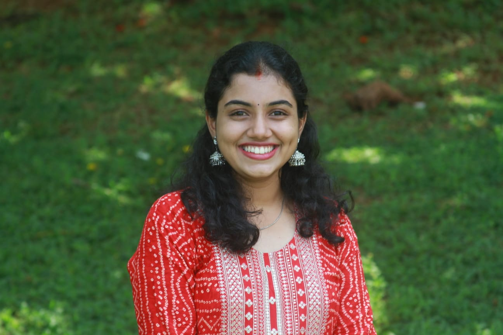

Skills
Python
SQL
Pandas
NumPy
Docker
FastAPI

I build LLM-powered systems, ML pipelines, and real-world AI applications focused on healthcare, recommendation systems, and intelligent automation.
I'm a 2025 Computer Science graduate with a strong focus on Artificial Intelligence and Machine Learning. I enjoy building practical, production-ready AI solutions that solve real-world problems and create meaningful user experiences. My work includes developing LLM-powered chatbots, Retrieval-Augmented Generation (RAG) pipelines, semantic search systems, and machine learning models for recommendation, prediction, and automation. I am passionate about transforming data into actionable insights and building intelligent applications that deliver measurable value. Beyond model development, I enjoy working across the entire AI lifecycle, from data preprocessing and experimentation to deployment and optimization. I am continuously exploring advancements in Generative AI, Vector Databases, and modern AI infrastructure while seeking opportunities to contribute to impactful products and innovative teams.
Python
SQL
Pandas
NumPy
Docker
FastAPI
February 2025 – May 2025